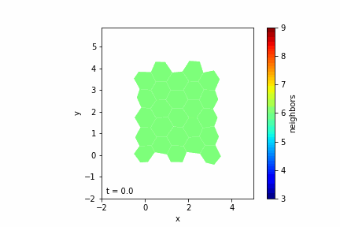

Work in Progress - this is a collextion of information and currently still being updated. Expect errors.
Understanding the mechanics of cell growth and interaction is crucial in developmental biology and tissue engineering. Computational models offer valuable insights by simulating these complex processes. One effective approach is the 2D vertex model, which represents cells as polygons in a two-dimensional plane. In this post, we'll explore the fundamentals of the vertex model and discuss how to implement it in Python to simulate cell growth and division, without delving into explicit code.

Introduction to the Vertex Model
The vertex model is a computational framework used to simulate the mechanical behavior of epithelial tissues. In this model:
- Cells are represented as polygons with straight edges.
- Vertices are points where edges meet and are shared among neighboring cells.
- Edges represent the boundaries between cells.
This model is particularly suitable for simulating tissues where cells are tightly packed, such as epithelial layers.
Why Use the Vertex Model?
- Efficiency: With fewer degrees of freedom compared to high-resolution models, simulations run faster.
- Flexibility: Can simulate various cellular behaviors like growth, division, and rearrangement.
- Relevance: Ideal for studying planar tissues where cell shapes and neighbor relationships are important.
Core Concepts of the Vertex Model
Potential Energy Function
The mechanical state of the tissue is described by a potential energy function \( U \):
\[ U = \sum_{c} \left[ \frac{K}{2} (A_c - A_{0c})^2 + \frac{\Gamma}{2} (P_c - P_{0c})^2 + \gamma P_c \right] \]
Where:
- \( K \) is the area elasticity coefficient.
- \( \Gamma \) is the perimeter elasticity coefficient.
- \( \gamma \) is the line tension coefficient.
- \( A_c \) and \( P_c \) are the area and perimeter of cell \( c \).
- \( A_{0c} \) and \( P_{0c} \) are the target area and perimeter.
Each term represents:
- Area Elasticity: Cells tend to maintain a target area \( A_{0c} \).
- Perimeter Elasticity: Cells tend to maintain a target perimeter \( P_{0c} \).
- Line Tension: Represents the contractile forces along the cell edges.
Forces on Vertices
The force on each vertex is calculated as the negative gradient of the potential energy:
\[ \mathbf{f}_i = -\nabla_i U = -\frac{\partial U}{\partial \mathbf{x}_i} \]
This force determines how the vertices (and thus the cells) move over time, allowing the simulation of dynamic behaviors like cell deformation and rearrangement.
Implementing the Vertex Model Conceptually
Overview of Implementation Steps
- Initialize the Tissue: Create an initial arrangement of cells, typically a grid of polygons (e.g., hexagons).
- Define Cell and Vertex Properties: Assign properties like positions, areas, perimeters, and target values.
- Compute Forces: For each vertex, calculate the forces resulting from deviations in area and perimeter.
- Update Positions: Move the vertices according to the computed forces.
- Simulate Growth and Division: Allow cells to grow and divide based on certain criteria.
- Handle Topological Changes: Implement T1 transitions to rearrange cells when necessary.
- Visualize the Tissue: Display the evolving tissue to observe cell behaviors over time.
Step 1: Initializing the Tissue
— Create Cells: Represent cells as polygons with vertices arranged in a consistent order (e.g., counter-clockwise).
— Position Vertices: Place vertices to form a regular grid, such as a honeycomb lattice for hexagonal cells.
— Merge Shared Vertices: Ensure that edges between adjacent cells share the same vertices by merging vertices that are at the same position.
Conceptual Pseudocode
for each cell in grid:
create vertices for the cell
add vertices to global vertex list
merge_vertices(vertex_list)
Step 2: Defining Cell and Vertex Properties
— Vertices: Each vertex has a position vector and a force vector initialized to zero.
— Cells: Each cell has a list of vertex indices and properties like area \( A_c \), perimeter \( P_c \), and target values \( A_{0c} \), \( P_{0c} \).
Step 3: Computing Forces
For each cell:
-
Compute Area and Perimeter:
- Area: Use the shoelace formula for polygons.
- Perimeter: Sum the lengths of the edges.
-
Calculate Gradients:
- Compute the gradients of area and perimeter with respect to each vertex position.
-
Compute Forces on Vertices:
- Use the potential energy derivatives to calculate the force contributions from each cell to its vertices.
Conceptual Pseudocode
for each cell:
compute area and perimeter
for each vertex in cell:
calculate gradient of area and perimeter
update vertex force using gradients
Step 4: Updating Positions
— Time Stepping: Use a simple integration method like Forward Euler to update vertex positions based on the forces.
— Viscous Damping: Include a damping coefficient to simulate the viscous nature of cellular environments.
Conceptual Pseudocode
for each vertex:
update position: x_new = x_old + (time_step / damping_coefficient) * force
Step 5: Simulating Growth and Division
Cell Growth
— Target Area Increase: Increment the target area \( A_{0c} \) of cells over time to simulate growth.
— Variable Growth Rates: Assign different growth rates to cells, possibly drawn from a random distribution.
Cell Division
— Division Criteria: A cell divides when its area exceeds a threshold \( A_{\text{div}} \).
— Division Process:
- Determine Division Axis: Use Hertwig's rule (divide along the longest axis) or choose randomly.
- Compute Centroid: Find the cell's centroid.
- Insert New Vertices and Edges: Add new vertices along the division axis and update the cell topology.
- Create Daughter Cells: Split the mother cell into two daughter cells, each with adjusted target areas.
Conceptual Pseudocode
for each cell:
if cell area > division threshold:
determine division axis
compute centroid
insert new vertices along division axis
create two new cells with updated properties
update neighboring cells to reflect topology change
Step 6: Handling Topological Changes (T1 Transitions)
— T1 Transition Criteria: Occurs when an edge becomes shorter than a minimum length \( l_{\text{min}} \).
— Rearrangement Process:
- Identify Short Edges: Check all edges for length criteria.
- Reconfigure Connections: Reconnect the vertices to neighboring cells to flip the edge.
- Adjust Vertex Positions: Move vertices slightly to prevent immediate reversal.
Conceptual Pseudocode
for each edge in cells:
if edge length < minimum length:
identify neighboring cells involved
reassign vertices to flip edge
adjust positions of vertices to stabilize
Step 7: Visualizing the Tissue
— Visualization Tools: Use libraries like Matplotlib to display the cells as polygons.
— Color Mapping: Optionally color cells based on properties like the number of neighbors.
— Animation: Create an animation to observe the tissue evolution over time.
Conclusion
By conceptualizing the implementation of the vertex model in Python, we can simulate complex tissue behaviors such as growth, division, and rearrangement. This approach provides a balance between computational efficiency and biological realism.
Key Takeaways
- Vertex Model: A powerful tool for simulating planar tissues with mechanical interactions.
- Mechanics: Cells aim to reach target areas and perimeters, with forces derived from deviations.
- Dynamics: Incorporating growth and topological changes allows for realistic tissue evolution.
Further Exploration
- Parameter Variation: Experiment with different elasticity and tension coefficients to observe various tissue behaviors.
- Advanced Features: Implement additional biological processes like apoptosis or differentiation.
- 3D Extensions: Consider extending the model to three dimensions for more comprehensive simulations.
References
- Farhadifar, R., et al. (2007). "The influence of cell mechanics, cell-cell interactions, and proliferation on epithelial packing." Current Biology, 17(24), 2095-2104.
- Lecture notes and exercises on vertex models and tissue simulations.
By understanding the conceptual steps and mathematical foundations of the vertex model, you can implement a simulation in Python that captures the dynamic nature of cell growth and tissue development, even without explicit code examples.